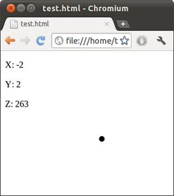

Accelerometer
Archivierte Anleitung
Dieser Artikel wurde archiviert, da er - oder Teile daraus - nur noch unter einer älteren Ubuntu-Version nutzbar ist. Diese Anleitung wird vom Wiki-Team weder auf Richtigkeit überprüft noch anderweitig gepflegt. Zusätzlich wurde der Artikel für weitere Änderungen gesperrt.
Zum Verständnis dieses Artikels sind folgende Seiten hilfreich:
Zum Verständnis dieses Artikels sind folgende Seiten hilfreich:
Apples Beschleunigungssensor¶
Viele moderne Notebooks enthalten Beschleunigungssensoren. Sie registrieren sowohl die Richtung der Gravitationskraft, also die Lage des Rechners, als auch abrupte Bewegungen. Allerdings registrieren sie nicht die Geschwindigkeit einer gleichförmigen Bewegung. Bei Apple heißen sie Sudden Motion Sensor, bei IBM/Lenovo HDAPS.
Beschleunigungssensor abfragen¶
Das Accelerometer von Apple MacBooks lässt sich unter dem Pfad /sys/devices/platform/applesmc.768/position abfragen. Getestet wurde dies mit einem MacBook Pro 4.1 unter Ubuntu 11.04.
cat /sys/devices/platform/applesmc.768/position
Ergebnis z.B.
(2,-1,268)
Die drei Sensoren mit den Bezeichnungen X,Y,Z liefern ganze Zahlen im Bereich von etwa +/- 1000.
| Funktion der einzelnen Sensoren | |||
| X | Y | Z | |
| bei waagerecht stehendem Rechner | 0 | 0 | 255 |
| Neigung zum User (Scharnier hoch) | größer | kleiner | |
| Neigung vom User weg (Touchpad hoch) | kleiner | kleiner | |
| Neigung links hoch | kleiner | kleiner | |
| Neigung rechts hoch | größer | kleiner | |
| Beschleunigung rauf | größer | ||
| Beschleunigung runter | kleiner | ||
| Beschleunigung nach links | kleiner | ||
| Beschleunigung nach rechts | größer | ||
| Beschleunigung nach hinten | größer | ||
| Beschleunigung nach vorne (zum User) | kleiner | ||
| Drehung um senkrechte Achse | |||
Der X-Sensor misst die Beschleunigung zu den Seiten. Steht das Notebook senkrecht auf der linken Seite, ist X=255, auf der rechten gilt X=-255. Dieser Sensor registriert seitliche Schläge und ist der richtige für die Simulation eines Lenkrades.
Der Y-Sensor verläuft von vorne nach hinten. Mit Displayscharnier oben gilt Y=255, mit Touchpad oben ist Y=-255.
Der Z-Sensor misst die Beschleunigung zum Boden des Notebooks. Die reine Gravitation bringt einen Wert von 255. Steht das Notebook senkrecht, egal auf welcher Seite, ist Z=0. Mit Tastatur nach unten ist Z=255.
Der Öffnungswinkel des Displays spielt bei diesen Sensoren gar keine Rolle und lässt sich auch nicht anderweitig durch Software ermitteln.
Einsatz als Wasserwaage oder Murmelspiel¶
In einer beispielhaften Anwendung soll der Sensor als eine hochsensible elektronische Wasserwaage verwendet werden.
Dazu wird als extrem schlanker Webserver NetCat aus dem Paket netcat-traditional benötigt.
netcat-traditional
 mit apturl
mit apturl
Paketliste zum Kopieren:
sudo apt-get install netcat-traditional
sudo aptitude install netcat-traditional
Danach wird er im Terminal[2] gestartet:
while true; do ( echo "HTTP/1.0 200 Ok"; echo; sed 's/(/X([/g;s/)/])/g' /sys/devices/platform/applesmc.768/position; ) | nc.traditional -q 0 -l -p 8090 > /dev/null ; done
Netcat lauscht auf Port 8090. Jede Anfrage auf der Adresse http://localhost:8090/ beantwortet er mit einem HTTP-Dokument mit den aktuellen Koordinaten. Dafür schickt netcat erst den HTTP-Header und dann die Daten des Sensors im Format JsonP. Es handelt sich um ein JavaScript-Dokument mit einem Objekt X, das von einem Browser per SCRIPT-Element eingebunden werden kann. Die Endlosschleife while-do-done startet den Server nach jeder Anfrage neu. Das Ergebnis lässt sich im Browser betrachten:
1 | X([-1,-4,259]) |
Die Webseite mit dem unten angegebenen Quellcode fragt über netcat regelmäßig den Sensor ab. Die JavaScript-Bibliothek JQuery wird automatisch von Googles Servern nachgeladen. Wer möchte, kann sich die Datei auch lokal herunterladen und die Referenz im SCRIPT-Element anpassen. Der Code in JQuery sorgt für die ständig aktualisierte Anzeige der Daten im Browser. Das DIV-Element bewegt sich nicht wie die Luftblase einer Wasserwaage, sondern wie eine Murmel auf einem Brett. Sie wandert also bei schräger Lage immer weiter und macht auch minimale Neigungen sichtbar.
1 2 3 4 5 6 7 8 9 10 11 12 13 14 15 16 17 18 19 20 21 22 23 24 25 26 27 28 29 30 31 32 33 | <!DOCTYPE HTML PUBLIC "-//W3C//DTD HTML 4.01//EN" "http://www.w3.org/TR/html4/strict.dtd"> <html> <!-- Include JQuery --> <script type="text/javascript" src="http://ajax.googleapis.com/ajax/libs/jquery/1/jquery.min.js"></script> <script type="text/javascript"> function iteration() { // Daten anzeigen // Hole Sensordaten. Die Zufallszahl verhindert Caching. $.getJSON('http://localhost:8090/?id='+Math.random()+'json=?',function(data) { // Zahlen einblenden: $('p#sensorx').text('X: '+data[0]); $('p#sensory').text('Y: '+data[1]); $('p#sensorz').text('Z: '+data[2]); // Murmel positionieren: $('div').css('left',$('div').position().left-parseInt(data[0])+'px'); $('div').css('top',$('div').position().top+parseInt(data[1])+'px'); }); } $().ready(function() { // Callbackmethode auf "X" setzen, weil netcat diese liefert: $.ajaxSetup({ jsonpCallback: 'X' }); // 20x pro Sekunde Anzeige aktualisieren: window.setInterval("iteration()", 50); }); </script> <body> <!-- Sensordaten --> <p id="sensorx"></p><p id="sensory"></p><p id="sensorz"></p> <!-- Murmel: --> <div style="position:absolute; left:50%; top:50%; width:10px; height:10px; background-color:black; -moz-border-radius: 5px; border-radius: 5px;"></div> </body> </html> |
 Nun ist ersichtlich, ob der Tisch gerade steht. Oben links stehen die Beschleunigungen, die das Accelerometer gemessen hat. X und Y geben die Neigung des Notebooks wieder. Z ist die Beschleunigung nach unten, 255 entspricht der Gravitationskraft. Das Notebook steht also flach auf dem Tisch. Der Punkt wandert nur langsam.
Ausblick¶
Der Sensor lässt sich auch von anderen Rechnern abfragen. Dann muss die IP-Adresse anstelle von localhost in die URL zum netcat.
Weiteren Experimenten in JQuery für ein Murmelspiel oder Rennen steht nichts mehr im Wege.
- Erstellt mit Inyoka
-
 2004 – 2017 ubuntuusers.de • Einige Rechte vorbehalten
2004 – 2017 ubuntuusers.de • Einige Rechte vorbehalten
Lizenz • Kontakt • Datenschutz • Impressum • Serverstatus -
Serverhousing gespendet von